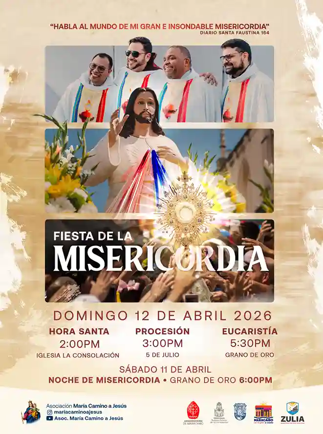
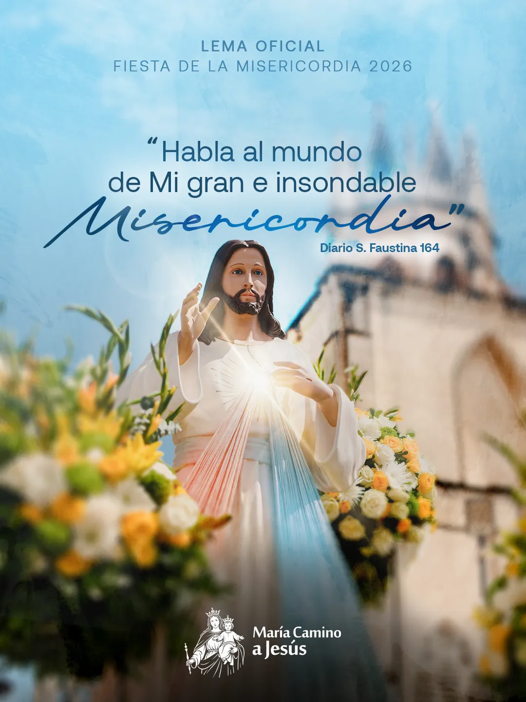

Celebrada del 10 al 12 de Abril de 2026
"Habla al mundo de Mi gran e insondable Misericordia"
— Diario Santa Faustina, 164
Revive en imágenes los momentos más emotivos de nuestra XXIX edición, donde la fe y la devoción llenaron las calles de Maracaibo.

La ciudad de Maracaibo vivió uno de los eventos de fe más grandes del país: la XXIX Fiesta de la Misericordia, que se llevó a cabo del viernes 10 al domingo 12 de abril de 2026.
Miles de feligreses se congregaron en una hermosa jornada de oración, reconciliación y encuentro profundo con la Misericordia de Dios.
"Habla al mundo de Mi gran e insondable Misericordia"
Diario de Santa Faustina, 164 — Lema Oficial 2026Así se desarrolló el itinerario preparado para toda la familia y la feligresía, cargado de oración, celebración y encuentro.
Este año, la festividad contó con un momento único: la visita del Movimiento de Espiritualidad y la Coral Betania (provenientes de Caracas), quienes trajeron consigo la sagrada imagen de la Virgen y Madre Reconciliadora de todos los pueblos y naciones.
Esta visita conmemoró el 50º aniversario de la aparición de la Virgen Reconciliadora a la Sierva de Dios, María Esperanza Medrano de Bianchini, en la Finca Betania.
Un despliegue sin precedentes que garantizó la mejor experiencia a cada peregrino a lo largo del recorrido.
"Habla al mundo
de Mi gran e insondable
Misericordia"
Diario de Santa Faustina · Entrada 164
